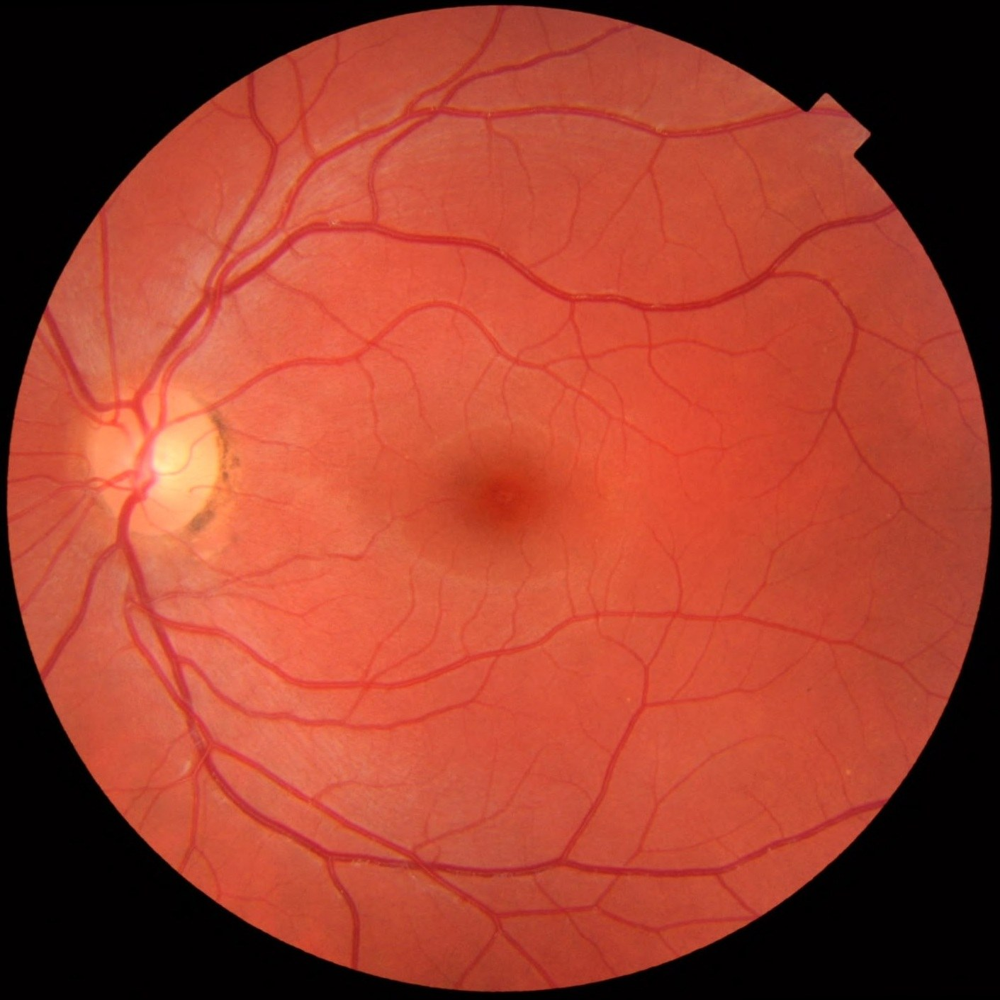

Thinking is
the work.
There is no shortage of tools that can read articles, search databases or generate hypotheses. We're asking a more uncomfortable question. Can an AI system help a scientist make better decisions when the evidence is incomplete?

A better answer is not necessarily a better scientific decision.
A researcher can have a credible summary, a clean chart and a plausible explanation, and still be no closer to knowing what to test.
We don't want to confuse busy work with scientific progress. Getting to a strong decision may mean discovering the relevant measurement, questioning its experimental design, weighing what two mechanisms predict, or admitting that the available data cannot decide.
What capable tools already do
Search literature, analyse datasets, assemble workflows, suggest hypotheses and work with existing scientific software.
What Stemma is trying to improve
The quality of the judgment that connects evidence to a scientific decision, especially when the question is unfamiliar or the result is uncertain.
Evidence should survive inspection.
If a paper is used to support a claim, we should know its actual system, controls, measurements and limitations. Finding the article is necessary. Establishing that it says what we think it says is a different task.
Creativity still needs a constraint.
We want fresh ideas, including useful connections to chemistry, physics, mathematics and other fields. But an analogy is a starting point, not a finding. A new biological explanation should make concrete predictions and survive the evidence we already have.
Sometimes the best conclusion is no conclusion.
Some questions are not identifiable from the available experiments. Some datasets have too few independent samples. Others do not contain the measurement we need. A system that quietly fills those gaps with a tidy story is not helping.
We would rather have a useful uncertainty than an impressive answer that cannot be defended.
And we have to prove that this helps.
Biomni, Edison Scientific, Causaly and capable general AI assistants already work on parts of this problem. We have not shown that Stemma makes better scientific decisions than they do. That is exactly what the research has to test.
Our standard is a fair comparison using real research questions, the same evidence and computational access, and independent assessment of what was actually concluded. If an ordinary assistant performs as well as Stemma, we should say so and learn from it.
Stemma is under development. The methods described here are design goals and research criteria, not a list of validated product capabilities.
Read the research notebook